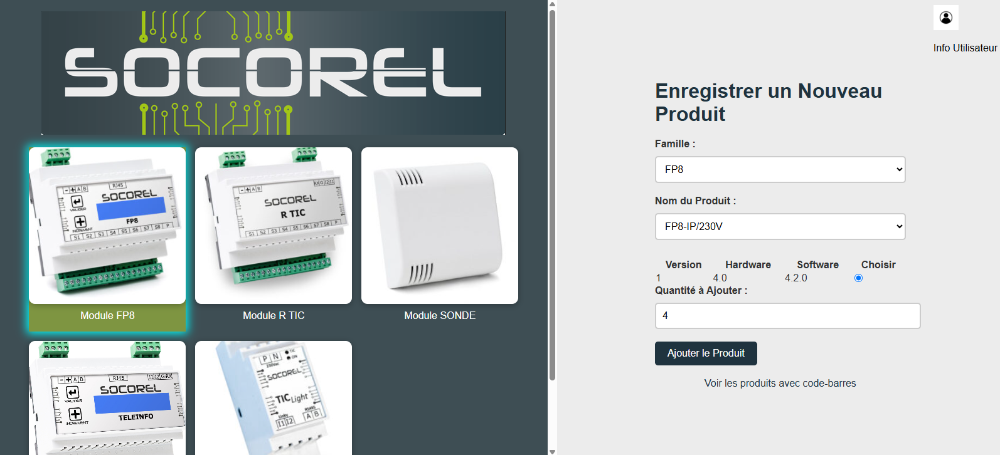

Dans le cadre de cette compétence, j’ai conçu et documenté une base de données pour gérer les produits de l’entreprise. Voici les principales tables de la BDD :
Voici une capture de la structure de la base :
Un outil web intuitif a été développé pour que les employés de Socorel puissent imprimer les étiquettes en quelques clics. Cet outil :
Voici des captures écran de l’interface utilisateur :
Page de connexion Page pour enregistrer un nouveau produit Page pour gérer les versions software et Hardware d'un produitLe développement s’est fait en suivant une méthode de gestion de projet agile. Un site de suivi a été mis en place afin de :
Quelques exemples d'état d'avancement des tâches lors du développement du projet avec :
-Activité : résumé de la tâche
-Date de fin (initialisé à la date de création d'une tâche)
-Statut : étât d'avencement de la tâche avec 3 étâts possible : en cours (tâches toujours en développement) / terminée (tâches terminée) / en suspens (tâches où une difficulté à été rencontrée et que le développement à été reporté).
-Terminé : coche qui permet de définir qu'une tâche est terminée et qui va venir actualiser les colonnes dates de fin en enregistrant la date de fin d'une tâche puis la valeur de la colonne statut passe en terminée.
-Commentaire : permet de saisir des commentaires en fonction de l'évolution d'une tâche / saisie de difficultés remportés / modification futur à implémenter ...
Des tests ont été réalisés afin de valider le bon fonctionnement du service d’impression des étiquettes, en vérifiant que les données issues de la base de données étaient correctement affichées sur l’interface web. Cela a inclus :
Ces tests ont permis de garantir la fiabilité du système et d’assurer que les utilisateurs disposent d’un outil fonctionnel et conforme à leurs besoins.
Captures d'écran montrant la correspondance d'un produit enregistré dans la base de données et son affichage dans l'outil WEB
Captures d'écran montrant la correspondance d'un bon de commande enregistré dans la base de données et son affichage dans l'outil WEB